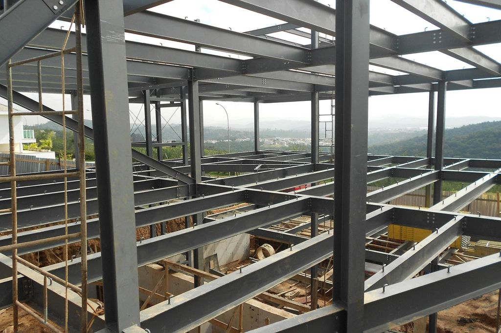

Pre-engineered steel buildings and structural engineering, led by an M.Tech structural engineer from Andhra University.
Book a Free ConsultationA pre-engineered building (PEB) is a steel structure whose columns, rafters, purlins and cladding are designed and fabricated off-site, then bolted together on site. Because most of the work happens in a factory, PEBs go up faster than conventional construction, use material efficiently and allow large, column-free spans.
Manzil Constructions & Interiors brings structural engineering into every project. Our founder, Shaik Miza Mehroz, holds an M.Tech in Structural Engineering from Andhra University, so stability, load paths and material efficiency are designed in from the start, whether the project is a PEB shed, a steel-framed building or a reinforced concrete home.

PEBs suit warehouses, factories, workshops, showrooms, commercial halls, schools, sports facilities and agricultural sheds, as well as mezzanine floors inside existing buildings. Large clear spans, quick construction and easy future expansion make them popular for growing businesses.
In coastal Andhra Pradesh, including Visakhapatnam and Kakinada, steel structures need the right protective coatings and detailing to resist salt air and humidity. Cyclone-prone regions also need careful wind-load design. These are part of our structural approach from day one.
For homes and conventional buildings, the same engineering mindset applies: we check structure before moving walls, design for seismic and lateral stability, and plan provisions for future floors so they can be added safely later.
Lifestyle mapping, Vastu inputs and budget clarity.
Mood, materials and photo-realistic 3D renders.
Technical drawings, joinery and lighting layers.
Site execution, quality checks and on-time handover.
Planned with Vastu from the first sketch.
Clear BOQs, tracked variations, no hidden costs.
Milestone-based schedules we commit to.
Led by a structural engineer (M.Tech, Andhra University).
A steel building whose structural members are designed and fabricated in a factory to exact requirements, then bolted together on site, which makes construction faster and more efficient.
Warehouses, factories, workshops, showrooms, commercial halls, schools, sports facilities, agricultural sheds and mezzanine floors.
Founder Shaik Miza Mehroz, a Civil Engineer with an M.Tech in Structural Engineering from Andhra University.
Yes. As a design-build company we can handle the structure and then the interiors and fit-out.
Visit our studio in Vishalakshi Nagar, Visakhapatnam (open all days, 9am to 7pm) or book a free consultation.
Contact Us